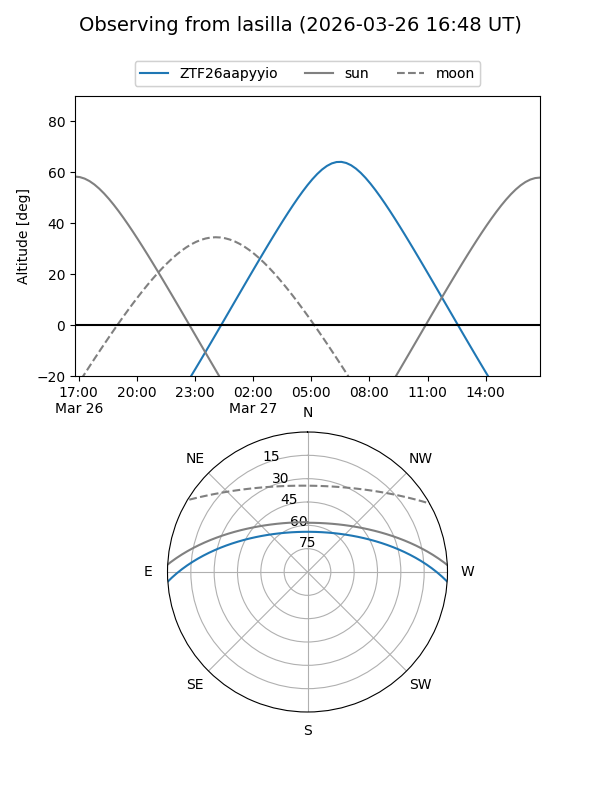
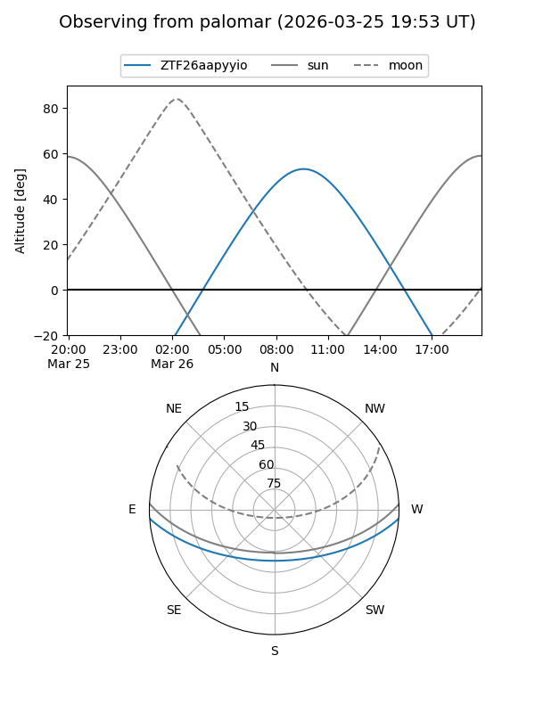

ZTF26aapyyio
Target ZTF26aapyyio at 2026-03-26 09:59
Aliases and brokers:
FINK: link
Lasair: link
ALeRCE: link
alt names
ZTF26aapyyio (ztf,fink_ztf)
Coordinates:
equatorial (ra, dec) = 210.5426,-3.28109
equatorial (HMS+DMS) = 14:02:10.23,-03:16:51.93
galactic (l, b) = (334.9662,+55.12975)
Flags:
Photometry:
last ztfg=19.85
1 ztfg detections
Lightcurve
Visibility


Additional plots